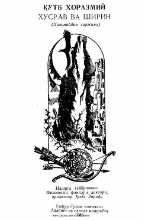

XVQutb Xorazmiyning Nizomiy Ganjaviy dostonidan qilgan mumtoz tarjimasi.
XIV asrda yashagan shoir Qutb Xorazmiyning Nizomiy Ganjaviyning shu nomli dostoni asosida o'zbek tiliga qilgan mukammal tarjimasi. Asar o'zbek adabiy tilining boyligi va tarjima san'atining yuksak namunalaridan biri hisoblanadi.